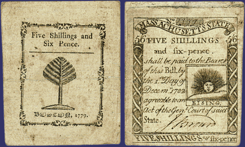
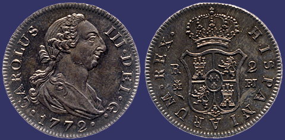
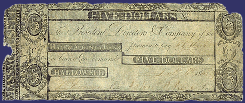
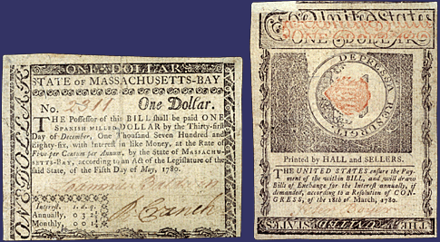

| return to theme |
Examples
of
eighteenth-century currency that was
in circulation in Martha's time and place. |
|
|
 |
||
 Head Pistareen, Spain, 1772 Hard currency was in short
supply and much of the hard currency in circulation was foreign. The new
decimal system of U.S. currency was based on the Spanish dollar, or piece-of-eight,
worth eight reales. Pistareens like this one were worth two reales. |
||
|
 Five Dollar Bill, Hallowell and Augusta Bank, January 1, 1807 |
||
|
 One Dollar Bill, Massachusetts, May 5, 1780 |
||
|
||||||||||||||||||